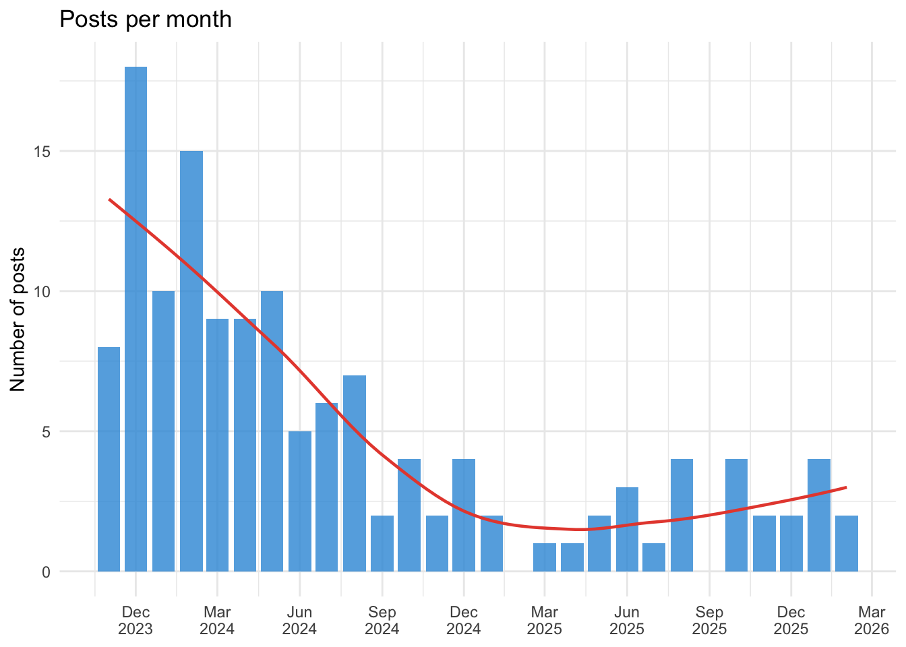
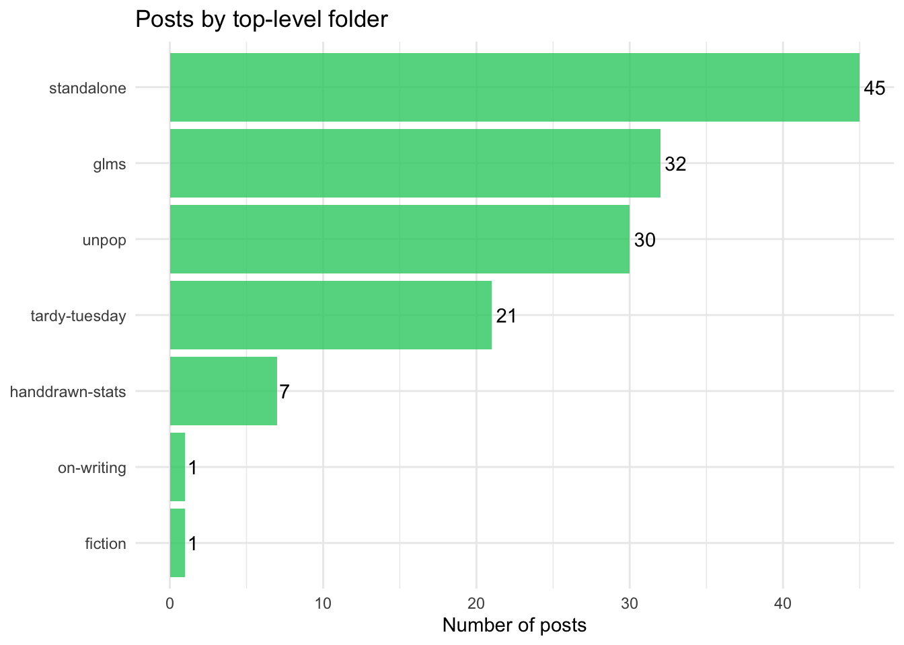
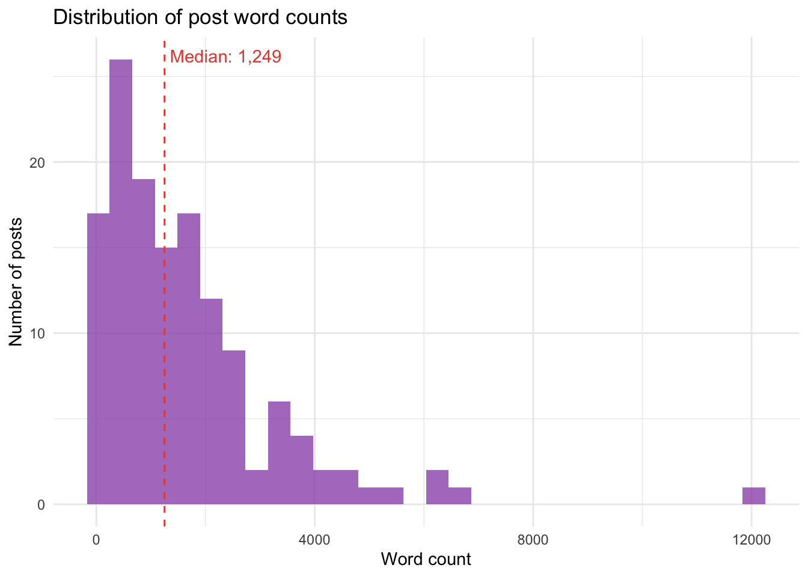
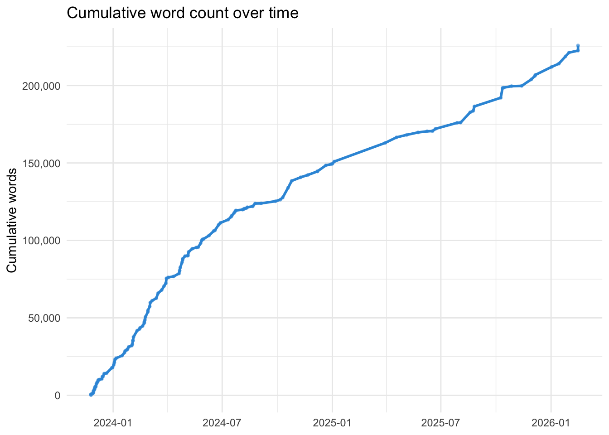

library(yaml)
library(dplyr)
library(tidyr)
library(stringr)
library(ggplot2)
library(plotly)
library(purrr)
library(lubridate)Introduction
This blog started in late November 2023, initially as a place to work through ideas about statistics, and quickly expanding to encompass film and book reviews, pop culture analysis, data visualisations, hand-drawn illustrations, and assorted other preoccupations. Over two years and 130+ posts later, it seems worth stepping back and looking at what’s accumulated.
This post uses R to programmatically read every post’s metadata — title, date, word count, categories — and visualise the blog’s structure, growth, and evolution.
Reading the metadata
# Find all index.qmd files in posts/
qmd_files <- list.files(
"../../posts",
pattern = "index\\.qmd$",
recursive = TRUE,
full.names = TRUE
)
# Function to safely extract metadata from a .qmd file
extract_post_meta <- function(f) {
lines <- tryCatch(readLines(f, warn = FALSE), error = function(e) character(0))
if (length(lines) == 0) return(NULL)
# Find YAML delimiters
yaml_markers <- which(lines == "---")
if (length(yaml_markers) < 2) return(NULL)
yaml_text <- paste(lines[(yaml_markers[1] + 1):(yaml_markers[2] - 1)], collapse = "\n")
meta <- tryCatch(yaml::yaml.load(yaml_text), error = function(e) NULL)
if (is.null(meta)) return(NULL)
# Calculate word count (text after YAML header)
body_lines <- lines[(yaml_markers[2] + 1):length(lines)]
text <- paste(body_lines, collapse = " ")
word_count <- str_count(text, "\\S+")
# Extract path components
rel_path <- str_remove(f, ".*/posts/")
path_parts <- str_split(rel_path, "/")[[1]]
# Determine folder structure
if (length(path_parts) >= 3) {
top_folder <- path_parts[1]
sub_folder <- path_parts[2]
} else if (length(path_parts) == 2) {
top_folder <- "standalone"
sub_folder <- path_parts[1]
} else {
top_folder <- "other"
sub_folder <- "other"
}
# Handle date
post_date <- tryCatch(as.Date(meta$date), error = function(e) NA_Date_)
# Handle categories
cats <- meta$categories
if (is.null(cats)) cats <- character(0)
tibble(
path = rel_path,
title = meta$title %||% "Untitled",
date = post_date,
word_count = word_count,
top_folder = top_folder,
sub_folder = sub_folder,
categories = list(cats),
has_claude_footnote = str_detect(text, "\\[\\^claude-")
)
}
# Extract metadata from all posts
posts_df <- map_dfr(qmd_files, extract_post_meta) |>
filter(!is.na(date)) |>
arrange(date)
cat(nrow(posts_df), "posts found, spanning",
as.character(min(posts_df$date)), "to", as.character(max(posts_df$date)), "\n")137 posts found, spanning 2023-11-25 to 2026-02-15 cat("Total word count:", format(sum(posts_df$word_count), big.mark = ","), "\n")Total word count: 225,824 The Treemap
The treemap below shows every post, grouped by top-level folder and sub-folder. Size reflects word count; colour reflects posting date (darker = older, lighter = more recent). Hover for details.
# Prepare treemap data
# Create parent labels
treemap_data <- posts_df |>
mutate(
# Clean up folder names for display
folder_label = case_when(
top_folder == "glms" ~ "GLM Series",
top_folder == "unpop" ~ "Unpopular Opinions",
top_folder == "tardy-tuesday" ~ "Tardy Tuesday",
top_folder == "handdrawn-stats" ~ "Hand-drawn Stats",
top_folder == "standalone" ~ "Standalone",
TRUE ~ top_folder
),
# Truncate long titles
short_title = str_trunc(title, 40),
date_numeric = as.numeric(date),
hover_text = paste0(
"<b>", title, "</b><br>",
"Date: ", date, "<br>",
"Words: ", format(word_count, big.mark = ","), "<br>",
"Folder: ", top_folder, "/", sub_folder
)
)
# Build the treemap
plot_ly(
type = "treemap",
labels = treemap_data$short_title,
parents = treemap_data$folder_label,
values = treemap_data$word_count,
text = treemap_data$hover_text,
hoverinfo = "text",
marker = list(
colors = treemap_data$date_numeric,
colorscale = list(
c(0, "#2c3e50"),
c(0.5, "#3498db"),
c(1, "#e74c3c")
),
showscale = TRUE,
colorbar = list(
title = "Date",
ticktext = c(
as.character(min(treemap_data$date)),
as.character(max(treemap_data$date))
),
tickvals = c(
min(treemap_data$date_numeric),
max(treemap_data$date_numeric)
)
)
),
textinfo = "label"
) |>
layout(
title = list(text = "Blog Post Treemap: Size = Word Count, Colour = Date"),
margin = list(t = 50)
)Posting Patterns
posts_by_month <- posts_df |>
mutate(month = floor_date(date, "month")) |>
count(month) |>
complete(month = seq(min(month), max(month), by = "month"), fill = list(n = 0))
ggplot(posts_by_month, aes(x = month, y = n)) +
geom_col(fill = "#3498db", alpha = 0.8) +
geom_smooth(se = FALSE, colour = "#e74c3c", linewidth = 0.8) +
labs(
title = "Posts per month",
x = NULL,
y = "Number of posts"
) +
theme_minimal() +
scale_x_date(date_breaks = "3 months", date_labels = "%b\n%Y")`geom_smooth()` using method = 'loess' and formula = 'y ~ x'
# Calculate gaps between posts
posts_sorted <- posts_df |> arrange(date)
gaps <- tibble(
from_title = posts_sorted$title[-nrow(posts_sorted)],
to_title = posts_sorted$title[-1],
from_date = posts_sorted$date[-nrow(posts_sorted)],
to_date = posts_sorted$date[-1],
gap_days = as.numeric(to_date - from_date)
)
cat("Longest gaps between posts:\n\n")Longest gaps between posts:gaps |>
arrange(desc(gap_days)) |>
head(5) |>
mutate(
gap = paste(gap_days, "days"),
from = paste0(from_title, " (", from_date, ")"),
to = paste0(to_title, " (", to_date, ")")
) |>
select(gap, from, to) |>
knitr::kable()| gap | from | to |
|---|---|---|
| 85 days | Brother Lee the Antimonk (2025-01-04) | Time and (state) change (2025-03-30) |
| 44 days | Remembering KGB: 1992’s subtly terrifying social poison simulator (2025-08-26) | The Man Who Solved Intelligence (2025-10-09) |
| 36 days | The Contestant (2025-06-22) | It’s your choice (2025-07-28) |
| 27 days | Claude Adds Footnotes: A Reflection (2025-12-06) | 2025: The Last Year Most Knowledge Workers will be Human (2026-01-02) |
| 24 days | Statistics Website (2024-09-04) | The Paradox of Tolerating Intolerance: Position A and Position B (2024-09-28) |
Content Categories
folder_summary <- posts_df |>
count(top_folder, sort = TRUE) |>
mutate(
pct = n / sum(n) * 100,
label = paste0(top_folder, " (", n, ", ", round(pct), "%)")
)
ggplot(folder_summary, aes(x = reorder(top_folder, n), y = n)) +
geom_col(fill = "#2ecc71", alpha = 0.8) +
geom_text(aes(label = n), hjust = -0.2) +
coord_flip() +
labs(
title = "Posts by top-level folder",
x = NULL,
y = "Number of posts"
) +
theme_minimal()
# Explode categories and count
all_cats <- posts_df |>
unnest(categories) |>
count(categories, sort = TRUE)
cat("Top 15 category tags:\n\n")Top 15 category tags:all_cats |>
head(15) |>
knitr::kable()| categories | n |
|---|---|
| statistics | 44 |
| R | 37 |
| tidy tuesday | 13 |
| stories | 8 |
| time series | 7 |
| films | 6 |
| AI | 5 |
| Tidy Tuesday | 5 |
| books | 5 |
| causality | 5 |
| games | 5 |
| blog | 4 |
| bootstrapping | 4 |
| economics | 4 |
| meta | 4 |
Word Counts
ggplot(posts_df, aes(x = word_count)) +
geom_histogram(bins = 30, fill = "#9b59b6", alpha = 0.8) +
geom_vline(xintercept = median(posts_df$word_count),
linetype = "dashed", colour = "#e74c3c") +
annotate("text", x = median(posts_df$word_count) + 100,
y = Inf, vjust = 2, hjust = 0,
label = paste("Median:", format(median(posts_df$word_count), big.mark = ",")),
colour = "#e74c3c") +
labs(
title = "Distribution of post word counts",
x = "Word count",
y = "Number of posts"
) +
theme_minimal()
cumulative <- posts_df |>
arrange(date) |>
mutate(
cumulative_words = cumsum(word_count),
post_number = row_number()
)
ggplot(cumulative, aes(x = date, y = cumulative_words)) +
geom_line(colour = "#3498db", linewidth = 1) +
geom_point(colour = "#3498db", size = 0.8, alpha = 0.5) +
scale_y_continuous(labels = scales::comma) +
labs(
title = "Cumulative word count over time",
x = NULL,
y = "Cumulative words"
) +
theme_minimal()
cat("Longest posts:\n\n")Longest posts:posts_df |>
arrange(desc(word_count)) |>
head(10) |>
select(title, date, word_count, top_folder) |>
knitr::kable()| title | date | word_count | top_folder |
|---|---|---|---|
| Time and (state) change | 2025-03-30 | 12044 | glms |
| Some thoughts on The Genius(*) Myth: A Review and a Reverie | 2025-08-19 | 6636 | unpop |
| Nine thoughts on Tim Berners-Lee’s This is for Everyone | 2025-10-12 | 6359 | unpop |
| Demystifying and Disenchanting Statistical Significance | 2024-10-19 | 6319 | glms |
| The Man Who Solved Intelligence | 2025-10-09 | 5578 | unpop |
| 2025: The Last Year Most Knowledge Workers will be Human | 2026-01-02 | 5134 | standalone |
| The Dilbert Future in Retrospect | 2026-01-25 | 4665 | standalone |
| The Book of Nigel | 2024-10-25 | 4451 | standalone |
| The Analytical Maxim Gun | 2025-11-29 | 4172 | standalone |
| Part Thirteen: On Marbles and Jumping Beans | 2024-02-10 | 4066 | glms |
The Claude Footnotes Project
In December 2025, Claude Sonnet reviewed 128 posts and added 42 fact-checking footnotes across 29 posts. In February 2026, Claude Opus conducted a more extensive review, expanding to previously-skipped opinion and commentary posts, correcting typos, and adding further footnotes.
footnoted <- posts_df |>
filter(has_claude_footnote)
cat(nrow(footnoted), "of", nrow(posts_df), "posts now have Claude footnotes.\n")31 of 137 posts now have Claude footnotes.cat("Footnoted posts by folder:\n\n")Footnoted posts by folder:footnoted |>
count(top_folder, sort = TRUE) |>
knitr::kable()| top_folder | n |
|---|---|
| unpop | 15 |
| glms | 11 |
| standalone | 3 |
| on-writing | 1 |
| tardy-tuesday | 1 |
Reflection
What does the data show? A blog that started with a burst of statistical pedagogy in late 2023 and early 2024, diversified into cultural commentary and personal essays, and settled into a rhythm of roughly weekly posting with occasional longer gaps. The GLM series remains the heaviest single body of work by word count, but the Unpopular Opinions posts collectively rival it — and tend to be more widely read. The Tardy Tuesday data visualisation posts, though numerous, are lighter on prose, being primarily code and charts.
The blog has become, unexpectedly, a body of work. Not a planned one — there was never a grand design — but an accumulation of preoccupations that, viewed at this distance, form a reasonably coherent picture of someone interested in both the mechanics of understanding the world (statistics, data, methodology) and the meaning we impose on it (stories, film, neurodiversity, politics).
Whether anyone other than the author reads it is, as ever, beside the point.